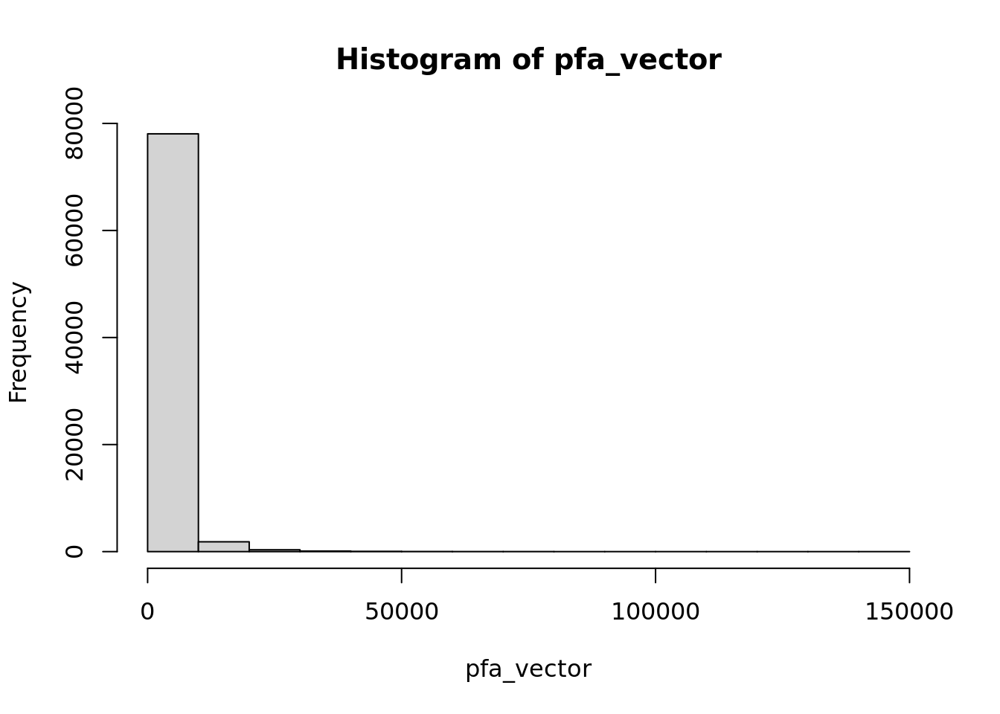
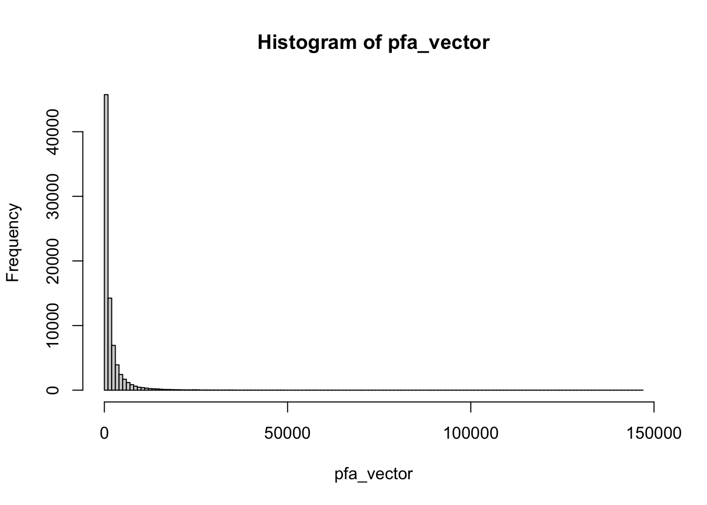
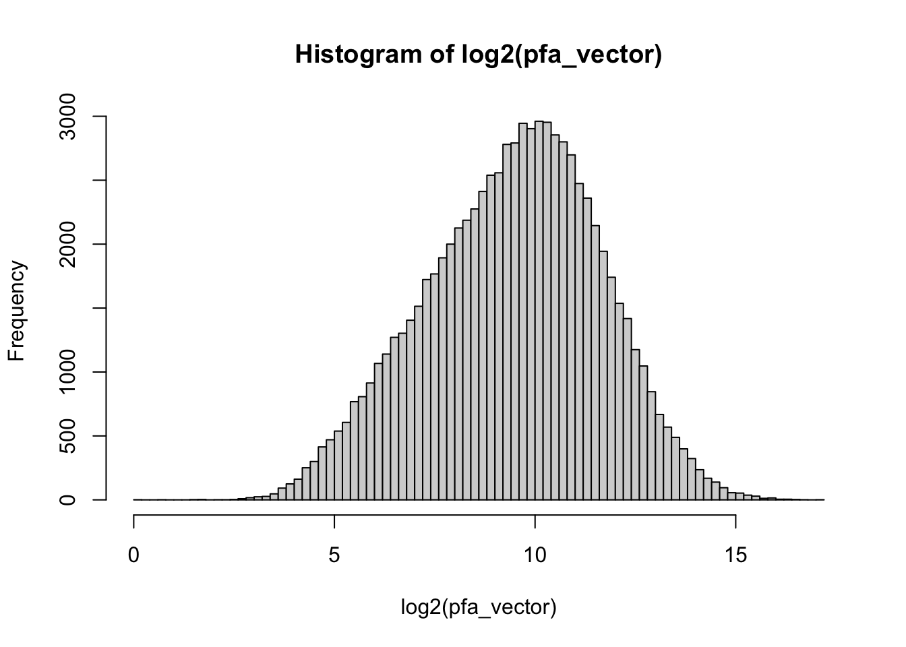
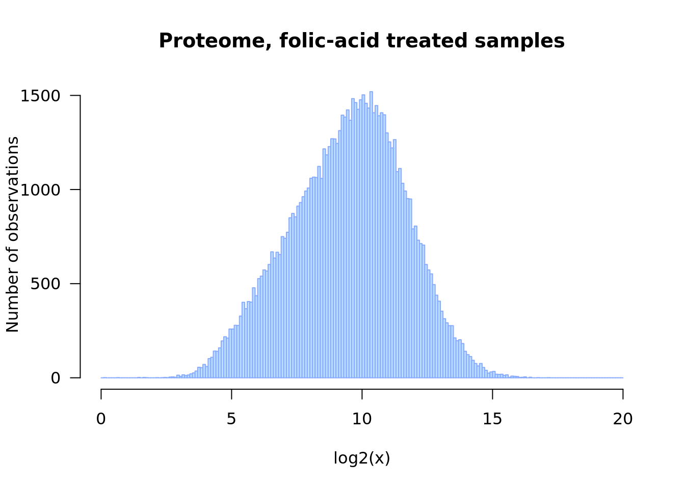

This tutorial aims at
Learn to load files from remote locations, either directly or by downloading them to a local folder.
Apply some of the methods taught in the previous courses in order to explore a data set.
Show some convenient ways of combinig R code and markdown elements within an R markdown document in order to obtain a well-formatted scientific report.
As study case for this tutorial, we will use multi-omics data from a study published by Pavkovic et al. (2019), which combines transctiptomics (RNA-seq) and proteomics approaches to understand the molecular mechanisms underlying the kidney fibrosis pathology.
The authors applied two commonly used treatments to induce kidney fibrosis in mouse:
a reversible chemical-induced injury model, denoted as FA for folic acid induced nephropathy;
an irreversible surgically-induced fibrosis model, denoted as UUO for unilateral uretral obstruction.
Reference: Pavkovic, M., Pantano, L., Gerlach, C.V. et al. Multi omics analysis of fibrotic kidneys in two mouse models. Sci Data 6, 92 (2019) https://doi.org/10.1038/s41597-019-0095-5
Mouse fibrotic kidney browser: http://hbcreports.med.harvard.edu/fmm/
Data on Zenodo: https://zenodo.org/record/2592516
A description of the study case can be found in the Mus musculus section of the the DUBii study cases repository repository.
We also provide there a detailed explanation of the data preparation steps:
We prepared the data from Pavkovic as a text file with tab-separated values (tsv files).
All the files are available on github: - https://github.com/DU-Bii/module-3-Stat-R/tree/master/stat-R_2021/data/pavkovic_2019
The files are named according to the following convention:
the prefix indicate the data type
The suffix indicates the data normalisation
the metadata files contain a short description of each sample (one row per sample). Note that the last column contains a sample-specific color specification in hexadecimal web color code to facilitate the drawings. Don’t hesitate to chose other colors according to your personal taste.
The R code belows follows the tidyverse styling guide (https://style.tidyverse.org/).
This tutorial will consist of exercises that can be realised in a stepwise way, with alternance of working sessions and live demos of the solutions, in order to make sure that all the trainees acquire each step.
Before computing any descriptive parameter on a dataset, I generallyi attempt to get a picture of the whole distribution.
We will provide here a magic recipe to download the data from the github repository to your local folder, and to load it in R.
## specify the base URL from which data files can be downloaded
url_base <- "https://github.com/DU-Bii/module-3-Stat-R/raw/master/stat-R_2021/data/pavkovic_2019"
## Choose a specific data file
data_prefix <- "pfa" ## proteome data of folic-acid treated mouse
data_suffix <- "model" ## no normalization
file_name <- paste0(data_prefix, "_", data_suffix, "_counts.tsv.gz")
## Compose the URL to download the file from github
url <- file.path(url_base, file_name)
message("URL: ", url)Now we defined the URL, we can easily load the file directly from github to a data frame in our R environement.
## this requires to load a specific package
if (!require("data.table")) {
install.packages("data.table")
}
library(data.table)
pfa <- fread(url, header = TRUE, sep = "\t")
dim(pfa)
names(pfa)
kable(head(pfa))We can now download the data file to a local folder, but we would like to do this only once.
## Specify the path relative to your home directory (~)
local_folder <- "~/DUBii-m3_data/pavkovic_2019"
local_file <- file.path(local_folder, file_name)
## Create the local data folder if it does not exist
dir.create(local_folder, showWarnings = FALSE, recursive = TRUE)
## Download the file ONLY if it is not already there
if (!file.exists(local_file)) {
message("Downloading file from github to local file\n\t",
local_file)
download.file(url = url, destfile = local_file)
} else {
message("Local file already exists, no need to download\n\t",
local_file)
}We will now load the proteome file, with the following parameters
make.names(x, unique = TRUE).## Load the data from the local file
pfa <- read.delim(file = local_file, header = TRUE, sep = "\t")
kable(head(pfa), caption = "Data frame just after loading")| id | normal_1 | normal_2 | day1_1 | day1_2 | day2_1 | day2_2 | day7_1 | day7_2 | day14_1 | day14_2 |
|---|---|---|---|---|---|---|---|---|---|---|
| ENSMUSG00000037686 | 531.2680 | 651.7200 | 335.5910 | 334.8460 | 197.1740 | 307.194 | 123.2060 | 272.6190 | 93.7247 | 196.1590 |
| ENSMUSG00000027831 | 221.6020 | 266.3590 | 175.4090 | 159.4190 | 234.8080 | 256.927 | 149.9380 | 315.0590 | 110.5880 | 126.3600 |
| ENSMUSG00000039201 | 26.0723 | 29.1331 | 57.7329 | 45.8475 | 81.6009 | 88.870 | 29.8560 | 44.5586 | 13.6292 | 27.6568 |
| ENSMUSG00000031095 | 4363.0500 | 4784.0800 | 4064.4800 | 3917.2900 | 4599.0300 | 5957.030 | 2806.5200 | 6792.0900 | 2022.5100 | 3226.7500 |
| ENSMUSG00000034931 | 879.2790 | 1065.3900 | 914.2870 | 928.2760 | 1000.1000 | 1264.270 | 738.3520 | 1362.0700 | 466.4440 | 714.5870 |
| ENSMUSG00000038208 | 68.2225 | 89.8871 | 57.9041 | 76.3510 | 84.8474 | 105.245 | 72.8696 | 138.9810 | 40.8101 | 59.2117 |
## Convert the first colum to row names
row.names(pfa) <- make.names(as.vector(pfa$id), unique = TRUE)
pfa <- pfa[, -1] ## Suppress the ID colimn
kable(head(pfa), caption = "Data frame with row names")| normal_1 | normal_2 | day1_1 | day1_2 | day2_1 | day2_2 | day7_1 | day7_2 | day14_1 | day14_2 | |
|---|---|---|---|---|---|---|---|---|---|---|
| ENSMUSG00000037686 | 531.2680 | 651.7200 | 335.5910 | 334.8460 | 197.1740 | 307.194 | 123.2060 | 272.6190 | 93.7247 | 196.1590 |
| ENSMUSG00000027831 | 221.6020 | 266.3590 | 175.4090 | 159.4190 | 234.8080 | 256.927 | 149.9380 | 315.0590 | 110.5880 | 126.3600 |
| ENSMUSG00000039201 | 26.0723 | 29.1331 | 57.7329 | 45.8475 | 81.6009 | 88.870 | 29.8560 | 44.5586 | 13.6292 | 27.6568 |
| ENSMUSG00000031095 | 4363.0500 | 4784.0800 | 4064.4800 | 3917.2900 | 4599.0300 | 5957.030 | 2806.5200 | 6792.0900 | 2022.5100 | 3226.7500 |
| ENSMUSG00000034931 | 879.2790 | 1065.3900 | 914.2870 | 928.2760 | 1000.1000 | 1264.270 | 738.3520 | 1362.0700 | 466.4440 | 714.5870 |
| ENSMUSG00000038208 | 68.2225 | 89.8871 | 57.9041 | 76.3510 | 84.8474 | 105.245 | 72.8696 | 138.9810 | 40.8101 | 59.2117 |
Write a functions that will download a file from a remote location to a local folder, but do this only if the local file is not yet present there.
Note that we use the roxygen2 format to write the documentation of this function. In any programming language, a function should always be documented in order to enable other people to use it, and the doc is also very useful for a developer to reuse her/his own code. The documentation becomes particularly interesting when you start building your own R packages, since it will automatically generate the help pages.
The documentation of a function should include - a description of what it does - the author name and a way to contact her/him - a description of each parameter (argument) of the function - a description of the return value
Roxygen2 provides is a very convenient way of documenting a function, because - the formalism is very simple - the doc comes together with the code of the function (by default, R functions are documented in a separate file)
#' @title Download a file only if it is not yet here
#' @author Jacques van Helden email{Jacques.van-Helden@@france-bioinformatique.fr}
#' @param url_base base of the URL, that will be prepended to the file name
#' @param file_name name of the file (should not contain any path)
#' @param local_folder path of a local folder where the file should be stored
#' @return the function returns the path of the local file, built from local_folder and file_name
#' @export
download_only_once <- function(url_base,
file_name,
local_folder) {
## Define the source URL
url <- file.path(url_base, file_name)
message("Source URL\n\t", url)
## Define the local file
local_file <- file.path(local_folder, file_name)
## Create the local data folder if it does not exist
dir.create(local_folder, showWarnings = FALSE, recursive = TRUE)
## Download the file ONLY if it is not already there
if (!file.exists(local_file)) {
message("Downloading file from source URL to local file\n\t",
local_file)
download.file(url = url, destfile = local_file)
} else {
message("Local file already exists, no need to download\n\t",
local_file)
}
return(local_file)
}We can now use our new function download_only_once() to download the files from the folic acid dataset and store them in a local folder. We will download successively :
fa)pfa)## Specify the basic parameters
pavkovic_base <- "https://github.com/DU-Bii/module-3-Stat-R/raw/master/stat-R_2021/data/pavkovic_2019"
pavkovic_folder <- "~/DUBii-m3_data/pavkovic_2019"
#### Dowload folic acid data and metadata ####
## Transcriptome data table
local_fa_file <- download_only_once(
url_base = pavkovic_base,
file_name = "fa_raw_counts.tsv.gz",
local_folder = pavkovic_folder
)
## Normalised transcriptome data table
local_fa_norm_file <- download_only_once(
url_base = pavkovic_base,
file_name = "fa_normalized_counts.tsv.gz",
local_folder = pavkovic_folder
)
## Transcriptome metadata
fa_metadata_file <- download_only_once(
url_base = pavkovic_base,
file_name = "fa_transcriptome_metadata.tsv",
local_folder = pavkovic_folder
)
## FA proteome data table
local_pfa_file <- download_only_once(
url_base = pavkovic_base,
file_name = "pfa_model_counts.tsv.gz",
local_folder = pavkovic_folder
)
## FA proteome metadata
pfa_metadata_file <- download_only_once(
url_base = pavkovic_base,
file_name = "pfa_proteome_metadata.tsv",
local_folder = pavkovic_folder
)
## UUO proteome data table
local_puuo_file <- download_only_once(
url_base = pavkovic_base,
file_name = "puuo_model_counts.tsv.gz",
local_folder = pavkovic_folder
)After having run the chunk of code above, try to re-run it. In principle, you should just receive messages telling you that the files are already there.
We now write a function load_fix_row_names() that loads a data file and takes a specified column as row names, whilst automatically fixing potential problems due to duplicate labels in this column.
#' @title Load a tab-separated value file and manually set row ames after having forced them to unique values
#' @author Jacques van Helden email{Jacques.van-Helden@@france-bioinformatique.fr}
#' @param file file path
#' @param header=1 Header is set to 1 by default
#' @param sep="\t" Column separator is set to tab by default
#' @param rownames.col=1 Column containing the row names
#' @param ... all other parameters are passed to read.delim()
#' @return a data frame with the loaded data
load_fix_row_names <- function(file,
header = 1,
sep = "\t",
rownames.col = 1,
...) {
x <- read.delim(file = file, ...)
rownames(x) <- make.names(x[, rownames.col], unique = TRUE)
x <- x[, -rownames.col]
return(x)
}We can now load the data that from our local folder.
## Load transcriptome data (raw counts)
fa_by_read_delim <- read.delim(file = local_fa_file, sep = "\t", header = TRUE)
## Check the first lines of the loaded file
# dim(fa)
message("Loaded raw counts of FA transcriptome raw counts with read_delim(): ",
nrow(fa_by_read_delim), " rows x ", ncol(fa_by_read_delim), " columns")
kable(head(fa_by_read_delim), caption = "FA transcriptome loaded with read.delim()")| rowname | day1_1 | day1_2 | day1_3 | day14_1 | day14_2 | day14_3 | day2_1 | day2_2 | day2_3 | day3_1 | day3_2 | day3_3 | day7_1 | day7_2 | day7_3 | normal_1 | normal_2 | normal_3 |
|---|---|---|---|---|---|---|---|---|---|---|---|---|---|---|---|---|---|---|
| ENSMUSG00000000001 | 2278.80022 | 1786.498848 | 2368.618959 | 627.758017 | 559.156031 | 611.4338605 | 2145.223456 | 262.454849 | 745.843632 | 987.1850529 | 1077.645231 | 1335.116771 | 1096.075988 | 1035.8458456 | 1090.0375905 | 483.2298191 | 1842.14841 | 475.696800 |
| ENSMUSG00000000003 | 0.00000 | 0.000000 | 0.000000 | 0.000000 | 0.000000 | 0.0000000 | 0.000000 | 0.000000 | 0.000000 | 0.0000000 | 0.000000 | 0.000000 | 0.000000 | 0.0000000 | 0.0000000 | 0.0000000 | 0.00000 | 0.000000 |
| ENSMUSG00000000028 | 36.27547 | 22.147861 | 39.484949 | 14.470759 | 10.167813 | 31.6910193 | 300.558779 | 4.771672 | 123.896184 | 51.8555945 | 8.434511 | 69.936866 | 6.665195 | 6.9552273 | 42.5783251 | 7.3515305 | 11.19676 | 1.034465 |
| ENSMUSG00000000031 | 13.18853 | 7.151932 | 1.115304 | 0.867429 | 0.000000 | 0.0000000 | 1.711944 | 0.000000 | 5.260747 | 0.8022308 | 0.000000 | 0.000000 | 0.000000 | 0.8489214 | 1.7106814 | 0.8603067 | 0.00000 | 0.000000 |
| ENSMUSG00000000037 | 0.00000 | 27.903213 | 6.897842 | 5.692254 | 1.901719 | 0.6549762 | 57.382077 | 0.000000 | 38.898261 | 8.9308534 | 6.966606 | 0.000000 | 7.939323 | 101.6481244 | 0.6500858 | 32.0575944 | 10.42322 | 0.000000 |
| ENSMUSG00000000049 | 30.86001 | 4.861367 | 51.466810 | 26.152649 | 1.968290 | 55.8319868 | 10.796186 | 2.747397 | 1.805883 | 0.9468345 | 26.954566 | 7.666032 | 32.235700 | 6.7001171 | 33.9132330 | 27.7647071 | 38.42445 | 15.903837 |
## Load the same data with load_fix_row_names
fa <- load_fix_row_names(file = local_fa_file, rownames.col = 1)
message("Loaded raw counts of FA transcriptome raw counts with load_fix_row_names(): ",
nrow(fa), " rows x ", ncol(fa), " columns")
kable(head(fa), caption = "FA transcriptome loaded with load_fix_row_names()")| day1_1 | day1_2 | day1_3 | day14_1 | day14_2 | day14_3 | day2_1 | day2_2 | day2_3 | day3_1 | day3_2 | day3_3 | day7_1 | day7_2 | day7_3 | normal_1 | normal_2 | normal_3 | |
|---|---|---|---|---|---|---|---|---|---|---|---|---|---|---|---|---|---|---|
| ENSMUSG00000000001 | 2278.80022 | 1786.498848 | 2368.618959 | 627.758017 | 559.156031 | 611.4338605 | 2145.223456 | 262.454849 | 745.843632 | 987.1850529 | 1077.645231 | 1335.116771 | 1096.075988 | 1035.8458456 | 1090.0375905 | 483.2298191 | 1842.14841 | 475.696800 |
| ENSMUSG00000000003 | 0.00000 | 0.000000 | 0.000000 | 0.000000 | 0.000000 | 0.0000000 | 0.000000 | 0.000000 | 0.000000 | 0.0000000 | 0.000000 | 0.000000 | 0.000000 | 0.0000000 | 0.0000000 | 0.0000000 | 0.00000 | 0.000000 |
| ENSMUSG00000000028 | 36.27547 | 22.147861 | 39.484949 | 14.470759 | 10.167813 | 31.6910193 | 300.558779 | 4.771672 | 123.896184 | 51.8555945 | 8.434511 | 69.936866 | 6.665195 | 6.9552273 | 42.5783251 | 7.3515305 | 11.19676 | 1.034465 |
| ENSMUSG00000000031 | 13.18853 | 7.151932 | 1.115304 | 0.867429 | 0.000000 | 0.0000000 | 1.711944 | 0.000000 | 5.260747 | 0.8022308 | 0.000000 | 0.000000 | 0.000000 | 0.8489214 | 1.7106814 | 0.8603067 | 0.00000 | 0.000000 |
| ENSMUSG00000000037 | 0.00000 | 27.903213 | 6.897842 | 5.692254 | 1.901719 | 0.6549762 | 57.382077 | 0.000000 | 38.898261 | 8.9308534 | 6.966606 | 0.000000 | 7.939323 | 101.6481244 | 0.6500858 | 32.0575944 | 10.42322 | 0.000000 |
| ENSMUSG00000000049 | 30.86001 | 4.861367 | 51.466810 | 26.152649 | 1.968290 | 55.8319868 | 10.796186 | 2.747397 | 1.805883 | 0.9468345 | 26.954566 | 7.666032 | 32.235700 | 6.7001171 | 33.9132330 | 27.7647071 | 38.42445 | 15.903837 |
# hist(unlist(fa), breaks = 100)
## Load normalised data with load_fix_row_names
fa_norm <- load_fix_row_names(file = local_fa_norm_file, rownames.col = 1)
message("Loaded raw counts of FA transcriptome normalised counts with load_fix_row_names(): ",
nrow(fa_norm), " rows x ", ncol(fa_norm), " columns")
# dim(fa_norm)
kable(head(fa_norm), caption = "First lines of the loaded normalised counts of FA transcriptome with load_fix_row_names()")| day1_1 | day1_2 | day1_3 | day14_1 | day14_2 | day14_3 | day2_1 | day2_2 | day2_3 | day3_1 | day3_2 | day3_3 | day7_1 | day7_2 | day7_3 | normal_1 | normal_2 | normal_3 | |
|---|---|---|---|---|---|---|---|---|---|---|---|---|---|---|---|---|---|---|
| ENSMUSG00000000001 | 2711.22417 | 1094.745589 | 1331.5880610 | 728.668808 | 603.846446 | 646.124076 | 1185.658698 | 1239.4695 | 829.596362 | 928.1069573 | 1110.908359 | 951.071644 | 953.722863 | 1008.0265279 | 1001.4667413 | 719.032852 | 1247.299971 | 809.375515 |
| ENSMUSG00000000003 | 0.00000 | 0.000000 | 0.0000000 | 0.000000 | 0.000000 | 0.000000 | 0.000000 | 0.0000 | 0.000000 | 0.0000000 | 0.000000 | 0.000000 | 0.000000 | 0.0000000 | 0.0000000 | 0.000000 | 0.000000 | 0.000000 |
| ENSMUSG00000000028 | 42.82759 | 13.485108 | 21.9214582 | 16.244209 | 10.802262 | 33.839559 | 166.379146 | 23.6540 | 137.895374 | 48.8972257 | 8.244218 | 49.868925 | 6.091296 | 6.8109901 | 39.5074036 | 10.420766 | 7.448588 | 1.700369 |
| ENSMUSG00000000031 | 15.46552 | 4.290716 | 0.5620887 | 1.160301 | 0.000000 | 0.000000 | 1.105509 | 0.0000 | 5.560297 | 0.9403313 | 0.000000 | 0.000000 | 0.000000 | 0.9729986 | 1.8375537 | 1.488681 | 0.000000 | 0.000000 |
| ENSMUSG00000000037 | 0.00000 | 17.162865 | 3.9346207 | 6.961804 | 2.160452 | 1.057486 | 31.507014 | 0.0000 | 43.370319 | 8.4629814 | 7.213691 | 0.000000 | 6.961481 | 99.2458551 | 0.9187768 | 47.637787 | 6.771444 | 0.000000 |
| ENSMUSG00000000049 | 36.87931 | 3.064797 | 28.6665222 | 30.167817 | 2.160452 | 59.219228 | 6.080301 | 14.1924 | 2.224119 | 0.9403313 | 27.824235 | 5.699306 | 27.845923 | 6.8109901 | 31.2384121 | 41.683064 | 25.731487 | 27.205900 |
## Load FA proteome data
pfa <- load_fix_row_names(file = local_pfa_file, rownames.col = 1)
message("Loaded raw counts of FA proteome (pfa) with load_fix_row_names(): ",
nrow(pfa), " rows x ", ncol(pfa), " columns")
# dim(pfa)
## Load UUO proteome data
puuo <- load_fix_row_names(file = local_puuo_file, rownames.col = 1)
message("Loaded raw counts of UUO proteome (puuo) with load_fix_row_names(): ",
nrow(puuo), " rows x ", ncol(puuo), " columns")
# dim(pfa)
## Check the first lines of the loaded file
kable(head(pfa), caption = "First lines of the proteome table")| normal_1 | normal_2 | day1_1 | day1_2 | day2_1 | day2_2 | day7_1 | day7_2 | day14_1 | day14_2 | |
|---|---|---|---|---|---|---|---|---|---|---|
| ENSMUSG00000037686 | 531.2680 | 651.7200 | 335.5910 | 334.8460 | 197.1740 | 307.194 | 123.2060 | 272.6190 | 93.7247 | 196.1590 |
| ENSMUSG00000027831 | 221.6020 | 266.3590 | 175.4090 | 159.4190 | 234.8080 | 256.927 | 149.9380 | 315.0590 | 110.5880 | 126.3600 |
| ENSMUSG00000039201 | 26.0723 | 29.1331 | 57.7329 | 45.8475 | 81.6009 | 88.870 | 29.8560 | 44.5586 | 13.6292 | 27.6568 |
| ENSMUSG00000031095 | 4363.0500 | 4784.0800 | 4064.4800 | 3917.2900 | 4599.0300 | 5957.030 | 2806.5200 | 6792.0900 | 2022.5100 | 3226.7500 |
| ENSMUSG00000034931 | 879.2790 | 1065.3900 | 914.2870 | 928.2760 | 1000.1000 | 1264.270 | 738.3520 | 1362.0700 | 466.4440 | 714.5870 |
| ENSMUSG00000038208 | 68.2225 | 89.8871 | 57.9041 | 76.3510 | 84.8474 | 105.245 | 72.8696 | 138.9810 | 40.8101 | 59.2117 |
## Load proteome metadata
pfa_metadata <- read.delim(file = pfa_metadata_file, sep = "\t", header = TRUE)
kable(pfa_metadata, caption = "Metadata for the FA proteome dataset")| dataType | sampleName | condition | sampleNumber | color |
|---|---|---|---|---|
| proteome | normal_1 | normal | 1 | #BBFFBB |
| proteome | normal_2 | normal | 2 | #BBFFBB |
| proteome | day1_1 | day1 | 1 | #FFFFDD |
| proteome | day1_2 | day1 | 2 | #FFFFDD |
| proteome | day2_1 | day2 | 1 | #BBD7FF |
| proteome | day2_2 | day2 | 1 | #BBD7FF |
| proteome | day3_1 | day3 | 1 | #F0BBFF |
| proteome | day3_2 | day3 | 2 | #F0BBFF |
| proteome | day7_1 | day7 | 1 | #FFDD88 |
| proteome | day7_2 | day7 | 2 | #FFDD88 |
| proteome | day14_1 | day14 | 1 | #FF4400 |
| proteome | day14_2 | day14 | 2 | #FF4400 |
## Load transcriptome metadata
fa_metadata <- read.delim(file = fa_metadata_file, sep = "\t", header = TRUE)
kable(fa_metadata, caption = "Metadata for the transcriptome dataset")| dataType | sampleName | condition | sampleNumber | color |
|---|---|---|---|---|
| 1 transcriptome | day14_1 | day14 | 1 | #FF4400 |
| 2 transcriptome | day14_2 | day14 | 2 | #FF4400 |
| 3 transcriptome | day14_3 | day14 | 3 | #FF4400 |
| 4 transcriptome | day1_1 | day1 | 1 | #BBD7FF |
| 5 transcriptome | day1_2 | day1 | 2 | #BBD7FF |
| 6 transcriptome | day1_3 | day1 | 3 | #BBD7FF |
| 7 transcriptome | day2_1 | day1 | 1 | #F0BBFF |
| 8 transcriptome | day2_2 | day1 | 2 | #F0BBFF |
| 9 transcriptome | day2_3 | day1 | 3 | #F0BBFF |
| 10 transcriptome | day3_1 | day3 | 1 | #FFFFDD |
| 11 transcriptome | day3_2 | day3 | 2 | #FFFFDD |
| 12 transcriptome | day3_3 | day3 | 3 | #FFFFDD |
| 13 transcriptome | day7_1 | day7 | 1 | #FFDD88 |
| 14 transcriptome | day7_2 | day7 | 2 | #FFDD88 |
| 15 transcriptome | day7_3 | day7 | 3 | #FFDD88 |
| 16 transcriptome | normal_1 | normal | 1 | #BBFFBB |
| 17 transcriptome | normal_2 | normal | 2 | #BBFFBB |
| 18 transcriptome | normal_3 | normal | 3 | #BBFFBB |
We can now use this function to download and load the different data files.
Draw histograms of the transcriptome and proteom data, all samples together.
pfa_vector <- unlist(as.vector(pfa))
hist(pfa_vector)
Let us now improve the histogram to get an intuition of our data. A first step is to increase the number of bins, with the
hist(pfa_vector, breaks = 200)
The distribution is stronly right-skewed, and its most representative part is “compressed” on the left side of the graph. As shown below, a log2 transformation provides a more informative view of the data.
## Plot the histogram of log2-transformed proteome data
## Note: we add an epsilon of 0.1 in order to avoid problems with null values
hist(log2(pfa_vector + 0.1), breaks = 100)
## Improve the histogram
## - add a title, axis labels, coloring, ...
## - increase readaility by writing each parameter on a separate line
hist(log2(pfa_vector + 0.1),
breaks = seq(from = -4, to = 20, by = 0.1),
col = "#BBDDFF",
border = "#88AAFF",
las = 1, # I like to read the labels
xlab = "log2(x)",
ylab = "Number of observations",
main = "Proteome, folic-acid treated samples")
We will now add a some options to the header of the R chunk in the R markdown, in order to control the way this figure is inserted in the report. Note that the chunk header must come on a single line.
```{r fa_hist_log2_sized, out.width="75%", fig.width=7, fig.height=4, fig.cap="Distribution of log2-transformed values for the proteome of folic acid-treated samples (data from Pavcovic et al., 2019)"}
fig.height and fig.width specify the size of the figure generated by R. These parameters are convenient to ensure proper proportions between height and widths, but also to incresae the readability of the labels (if you increasa the size, the fonts will look smaller).
out.width enables you to control the width occupied by your figure in the HTML or pdf report.
fig.cap enables you to add a caption to the figure
## Improve the histogram
## - add a title, axis labels, coloring, ...
## - increase readaility by writing each parameter on a separate line
hist(log2(pfa_vector),
breaks = seq(from = 0, to = 20, by = 0.1),
col = "#BBDDFF",
border = "#88AAFF",
las = 1, # I like to read the labels
xlab = "log2(x)",
ylab = "Number of observations",
main = "Proteome, folic-acid treated samples")Distribution of log2-transformed values for the proteome of folic acid-treated samples (data from Pavcovic et al., 2019)
Here is an example of code for a log2 boxplot ofthe fa data that uses the metadata tables to set up the colors.
## Box plot of the transcriptome data before and after normalisation
par_ori <- par(no.readonly = TRUE) ## Store the original parameters in order to restore them afterwards
par(mar = c(4, 6, 5, 1)) ## Adapt the margins of the boxplot in order to have enough space for sample labels
par(mfrow = c(1,2)) ## Two side-by-side panes
## Compute the log2 of the proteome data
## Note: we add an epsilon of 0.1 to avoid problems with null values
log2pfa <- log2(pfa + 0.1)
boxplot(pfa,
col = pfa_metadata$color,
horizontal = TRUE,
las = 1,
main = "Proteome, original values",
xlab = "value")
boxplot(log2pfa,
col = pfa_metadata$color,
horizontal = TRUE,
las = 1,
main = "Proteome, log2-transformed",
xlab = "log2(value)")Box plots of proteome data before (left) and after (right) log2 transformation.
par(par_ori)The box plots show the distribution of the data before (left) and after (right) log2 transformation.
The transcriptome data is providedd
## Box plot of the transcriptome data before and after normalisation
par_ori <- par(no.readonly = TRUE) ## Store the original parameters in order to restore them afterwards
par(mar = c(4, 6, 5, 1)) ## Adapt the margins of the boxplot in order to have enough space for sample labels
par(mfrow = c(2,2)) ## 4 panels, with 2 rows and 2 columns
## Counts before and after normalisation, but no log2 transformation
## Raw counts
boxplot(fa,
col = fa_metadata$color,
horizontal = TRUE,
las = 1,
main = "FA transcriptome\nraw counts",
xlab = "counts")
## Normalised transcriptome data
boxplot(fa_norm,
col = fa_metadata$color,
horizontal = TRUE,
las = 1,
main = "FA transcriptome\nnormalised counts",
xlab = "counts")
## Compute the log2 of the transcriptome data
## Note: we add an epsilon of 0.1 to avoid problems with null values
log2fa <- log2(fa + 0.1)
log2fa_norm <- log2(fa_norm + 0.1)
## Raw counts
boxplot(log2fa,
col = fa_metadata$color,
horizontal = TRUE,
las = 1,
main = "FA transcriptome\nlog2raw (counts)",
xlab = "log2(counts)")
## Normalised transcriptome data
boxplot(log2fa_norm,
col = fa_metadata$color,
horizontal = TRUE,
las = 1,
main = "FA transcriptome\nlog2(normalised counts)",
xlab = "log2(normalised counts)")Box plots of transcriptome data before (left) and after (right) normalisation. All values are log2 transformed.
par(par_ori)The raw and normalised counts (top) show a strongly right-skewed distribution due to the presence of outliers. In each sample, a very few genes have very high values (25 miilion counts !). Such outliers can be really problematic because they will exert a very strong effect on the subsequent analyses (PCA, clustering, or any other analysis that relies on distances between samples). For PCA, we recommend to use the log2-transformed values.
The log2 transformation (bottom) mittigates the impact of these outliers. The bottom right panel shows that all the samples have the same third quartile (right side of the boxplot rectangle), thereby indicating the method used to standardise this method.
For all samples, the third quartile equals the minimal value, indicating that at least 25% of the genes had a null count.
The sample day2_2 has a median value equal to its minimal value, indicating that at least 50% of the genes have null value in this sample.
As an exercise, we ask you to insert here your analysis of Pavkovicz data with the PCA methods presented in the session 4 of this course. Try to generate nice figures that will give you insight into the structure of the 4 datasets : transcriptome and proteome for the two respective treatments (folic acid and surgery, respectively).
For this, you should first download a copy of the R markdown source, install it in a local folder, and run knitr to compile an HTML or pdf report. If this works, you will start adding your own chunks of code and interpretation of the results.
Tips: - play with the scale options of the PC transformation - test if the 3rd and 4th components provide additional information than the 1st and 2nd components - compare the results obtained with the raw and normalised data sets, respectively - test the PCA with and without log2 transformation
It is not necessary to show all the results in this report, only select the most informative plots.
At the end, we expect to find here the most relevant figures resulting from this exploration, with a short explanation of - the parameters you chose for the analysis (normalised or not, log2 transformed or not, PC scaling or not, …) - some interpretation of the results in term of positioning of the samples on the components.
Don’t hesitate to call the team in case of trouble.
Use the function save.image() to store an image of your session, in a file pavkovic_memory_image.Rdata in the local folder specified above. This file will contain all the data that you loaded during this session, and enable you to reload everything without having to re-execute all the steps.
## Define the path to the memory image file
memory_image_file <- file.path(local_folder, "pavkovic_memory_image.Rdata")
## Save the memory image
save.image(file = memory_image_file)
message("Memory image saved in file\n\t", memory_image_file)For a future session, you will be able to reload all the data with a single command:
load([path_to_your_memory_image])
You will need to replace [path_to_your_memory_image] by your actual path. In my case, the command becomes:
load("~/DUBii-m3_data/pavkovic_2019/pavkovic_memory_image.Rdata")
For the sake of traceability, store the specifications of your R environment in the report, with the command sessionInfo(). This will indicate the version of R as wella sof all the libraries used in this notebook.
sessionInfo()R version 4.0.2 (2020-06-22)
Platform: x86_64-conda_cos6-linux-gnu (64-bit)
Running under: CentOS Linux 7 (Core)
Matrix products: default
BLAS/LAPACK: /shared/ifbstor1/software/miniconda/envs/r-4.0.2/lib/libopenblasp-r0.3.10.so
locale:
[1] LC_CTYPE=en_US.UTF-8 LC_NUMERIC=C LC_TIME=en_US.UTF-8 LC_COLLATE=en_US.UTF-8 LC_MONETARY=en_US.UTF-8 LC_MESSAGES=en_US.UTF-8 LC_PAPER=en_US.UTF-8 LC_NAME=C LC_ADDRESS=C LC_TELEPHONE=C
[11] LC_MEASUREMENT=en_US.UTF-8 LC_IDENTIFICATION=C
attached base packages:
[1] stats graphics grDevices utils datasets methods base
other attached packages:
[1] knitr_1.30
loaded via a namespace (and not attached):
[1] compiler_4.0.2 magrittr_2.0.1 tools_4.0.2 htmltools_0.5.1.1 yaml_2.2.1 stringi_1.5.3 rmarkdown_2.5 highr_0.8 stringr_1.4.0 xfun_0.20 digest_0.6.27 rlang_0.4.10 evaluate_0.14